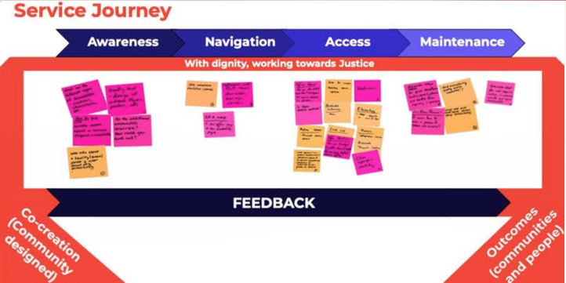
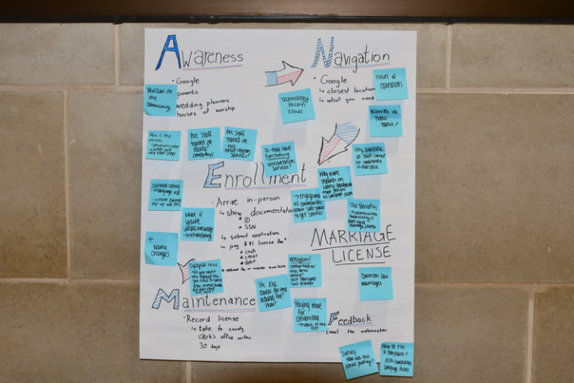
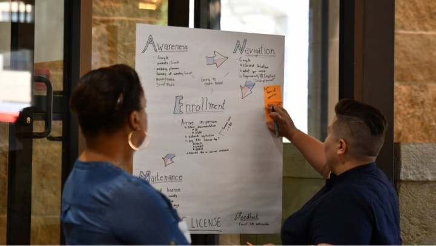
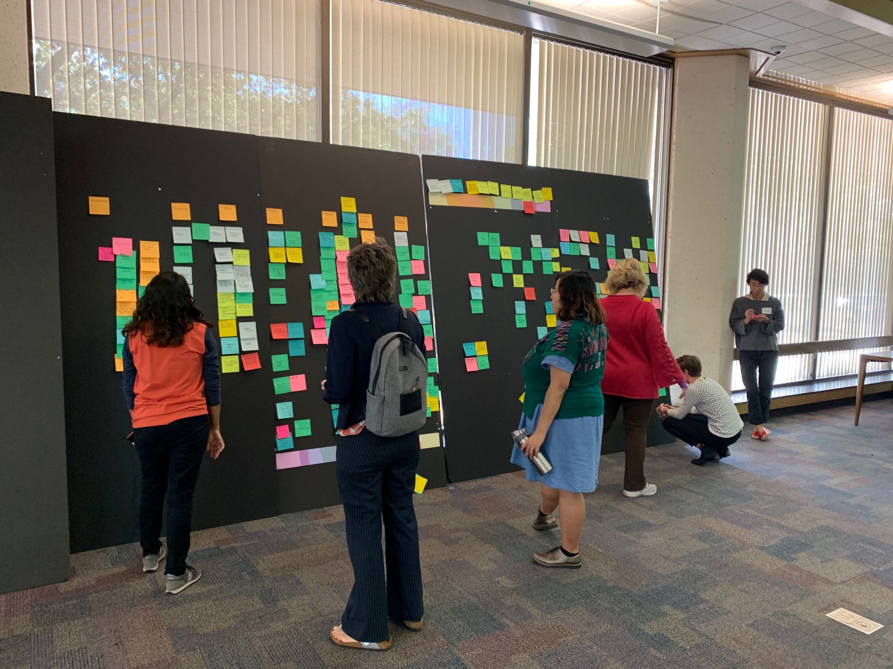
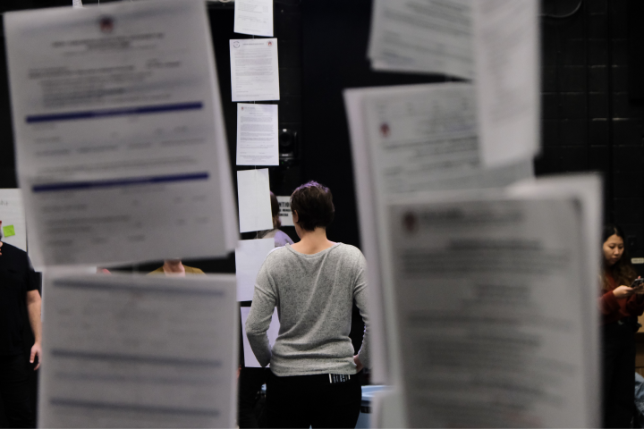

Service Access
Redesigning City services for accessibility
Case Study
Summary
Every day, the City of Austin provides services that impact residents' quality of life. The City's technology department, Community and Technology Management (or CTM), is partnering with other departments to make services easier to access and use for the Austin community by putting them online and redesigning how they work. Our goal is to use accessibility in prioritizing what services to digitize or redesign.
My role: user research, workshop and co-design facilitation
Deliverables: research synthesis, usability testing synthesis, co-design synthesis
Challenge
We know that the design and provision of public services can often introduce unintended barriers for the public because getting diverse input from residents can be difficult, especially when accessibility means different things to different people, in different situations. While city services may be fairly standardized and uniform, the experiences of accessing services are as diverse as Austin residents. The complexity of residents’ lives are often at odds with the rigidity of services. In order to bridge this discrepancy, it is necessary to identify where and why these contradictions become barriers to access.
Solution
Through an inclusive, co-design process with the public and with City staff, our team developed an accessibility framework and a cross-City survey of government services that fed into an inventory which measured the level of impact and complexity of many City services. Using this inventory, we were able to assess services for accessibility, prioritizing these for service design engagements. Additionally, we created a physical installation, prompting visitors to reimagine the City’s website and catalog of digital forms and services.
Process
Inventory and Assessment
Our team conducted secondary research on five main dimensions of accessibility: physical access, financial access, mobility access, digital access, and content access. From this background research, an inventory of City services, and ideation of potential barriers, we created a framework for assessing the level of accessibility of services from a resident perspective.
Framework Testing with City Stakeholders
We held a kick-off workshop with City stakeholders to:
- Inform them about our work, why we are doing it, and how they can participate
- Get their input on how we will inventory and assess City services for accessibility – including their perspectives on the challenges and opportunities to make City services more accessible
We facilitated empathy mapping activities and challenged city employees to use our framework to identify barriers to accessing government services and provide feedback on our work.
 Co-Designing with Residents
Accessibility, though, is a broad term. It encompasses the many facets of a person's experience from language to financial status to mobility and so on. Recognizing that barriers in services are as diverse as our residents, we wanted to host a co-design workshop to let residents define what "accessibility" means for the city.
Our workshop goals:
- Identify accessibility considerations and barriers that people encounter in services
- Match needs and barriers to service journeys
To make the workshop as accessible as possible, we specifically designed inclusive activities, chose an inclusive space and location, and provided translation and sign language interpreters.
What We Learned
Several themes emerged early on in our outreach like mobility, digital and sensory access. Other issues like time and equity emerged as we talked to people about their experiences during co-design and co-synthesis.
Some of the main insights gleaned from residents’ and City staff feedback:
- Services have hidden costs and requirements, which create barriers for residents.
- The systems that enable services suffer similar accessibility issues and dependencies.
- Limited options restrict the people who are able to receive a service.
- Services aren’t designed for comfort or safety.
- Staff are stuck in a continuous cycle when trying to provide more accessible services.
Installation
INSTALLATION: RE-IMAGINING THE CITY OF AUSTIN’S WEBSITE AS A PHYSICAL SPACE
For this year’s Digital Inclusion Week, the City’s Office of Design and Delivery put together an exhibit of all the portable document format (PDF) forms hosted on the city’s website, austintexas.gov. The installation, which displayed over 500 PDF forms, was only a fraction of the 6,566 PDF documents that currently exist on the city’s website.
The goal of the installation was to create awareness about the need to digitize services. Besides cutting down on paper, digitization (when done right) makes services more accessible.
“So this is what the internet would look like in real life.”

Conclusion
Feedback is everything and should be at the heart of any service. As a city employee, I’m responsible for designing and continually iterating upon services to make them as accessible and effective as possible. Because we are empowered, we have agency to operate the levers and tools that affect the institutions in which we work.